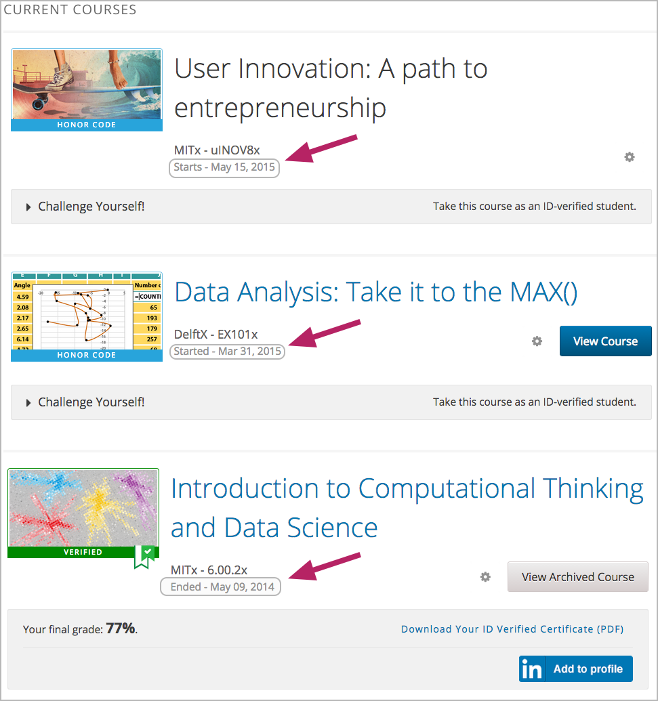
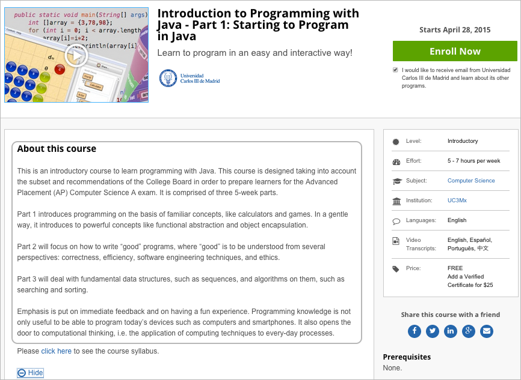
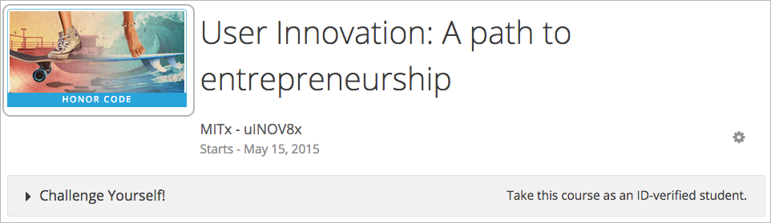
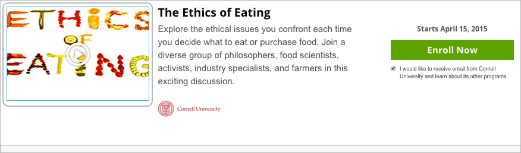
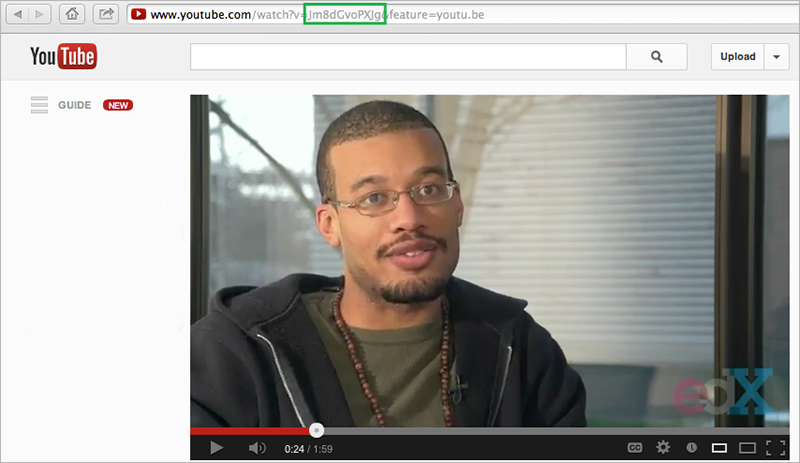

此章讲述如何在Studio中设置您的课程细节。 您所设置的细节内容将会影响学生面板中看到的信息。 详情请参阅 搜索你的仪表板、设置和配置文件。
设置重要日期相关内容请参阅 设置开始和结束日期.
设置课程证书相关内容请参阅 授权课程.
如果学生注册您的课程，之后课程和课程图片会在控制面板上显示。 学生从控制面板上能点开开始的课程。 正如 设置开始和结束日期 此章所讲述的，如果课程无法开始，学生能看看开始日期。
学生将在您的课程页面中看到您对课程的描述。
例如，课程描述在以下课程总结页面以环形结构展开。
Note
您必须与您的edX项目经理就edX.org网页上的课程描述进行交流，以确保课程总结页面的内容是正确的。
您向Studio上传添加的相关课程图片会呈现在学生使用界面里。 课程图片像素至少为660*240（宽*高），格式应为.JPG或.PHG。 确保您上传的图片符合以上规格，以合适地显现在学生使用界面中。
在以下样例中，上传至Studio的课程图片将会放在方框里呈现在学生使用界面上。
Note
您向Studio上传添加的图片并不会自动显示在网页edX.org的课程概要页面上。 您必须直接与edX的项目经理联系，让他在课程概要页面上予以设置。
学生可在课程概要页面上浏览添加的课程视频简介。
在以下样例中，上传的课程视频将会放在方框中呈现在课程概要页面上：
课程视频应达到刺激并吸引潜在学生注册上课的效果，且应展示该课程讲师的部分授课风格。
视频应回答下列重要问题：
上传的视频简介应尽可能地简明传达您的信息，且时长至少为两分钟。
#.上传课程视频至YouTube视频网站。记录网址上 watch?v = 和 &feature 的中间部分。如下列样例绿框中出现的代码。

Note
在edX.org页面上，直接与项目经理取得联系，让其在课程概要页面添加您的课程视频。
课程估计所需时间将显示在课程概要页面底部。
您将在Studio中设置每周所需的估计时长。
将下述模板中占位符部分替换为您的课程信息。
<section class="about">
<h2>About This Course</h2>
<p>Include your long course description here. The long course description
should contain 150-400 words.</p>
<p>This is paragraph 2 of the long course description. Add more paragraphs
as needed. Make sure to enclose them in paragraph tags.</p>
</section>
<section class="prerequisites">
<h2>Requirements</h2>
<p>Add information about the skills and knowledge students need to take
this course.</p>
</section>
<section class="course-staff">
<h2>Course Staff</h2>
<article class="teacher">
<div class="teacher-image">
<img src="/static/images/placeholder-faculty.png" align="left"
style="margin:0 20 px 0" alt="Course Staff Image #1">
</div>
<h3>Staff Member #1</h3>
<p>Biography of instructor/staff member #1</p>
</article>
<article class="teacher">
<div class="teacher-image">
<img src="/static/images/placeholder-faculty.png" align="left"
style="margin:0 20 px 0" alt="Course Staff Image #2">
</div>
<h3>Staff Member #2</h3>
<p>Biography of instructor/staff member #2</p>
</article>
</section>
<section class="faq">
<section class="responses">
<h2>Frequently Asked Questions</h2>
<article class="response">
<h3>Do I need to buy a textbook?</h3>
<p>No, a free online version of Chemistry: Principles, Patterns, and
Applications, First Edition by Bruce Averill and Patricia Eldredge
will be available, though you can purchase a printed version (
published by FlatWorld Knowledge) if you’d like.</p>
</article>
<article class="response">
<h3>Question #2</h3>
<p>Your answer would be displayed here.</p>
</article>
</section>
</section>
{kind=link}
{kind=link}
{kind=link}
{kind=link}
{kind=link}
{kind=link}